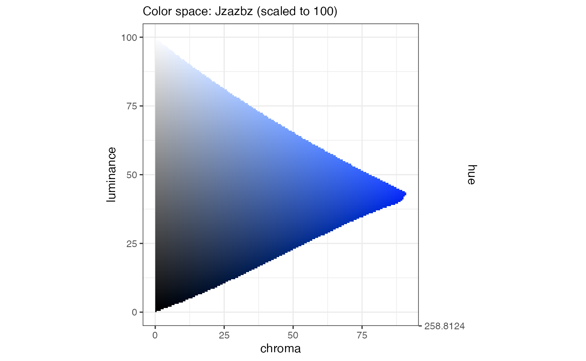
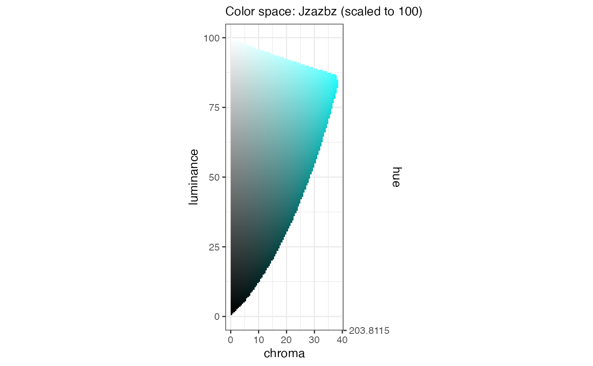
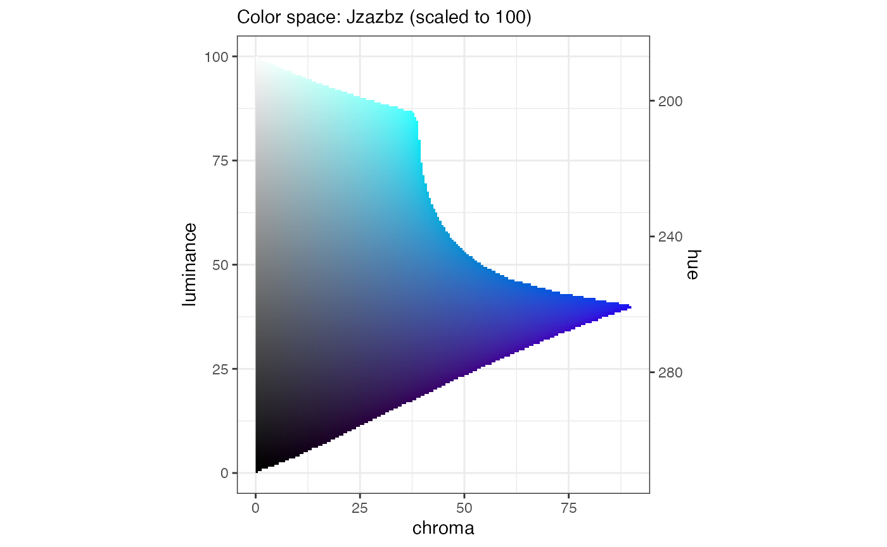
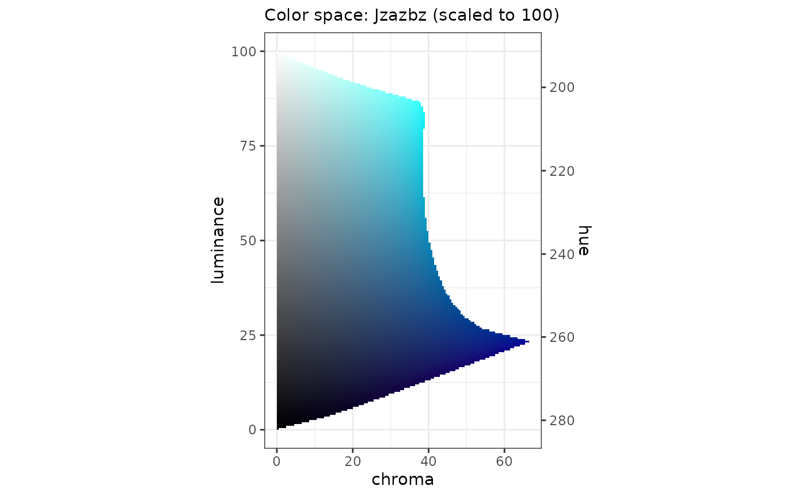
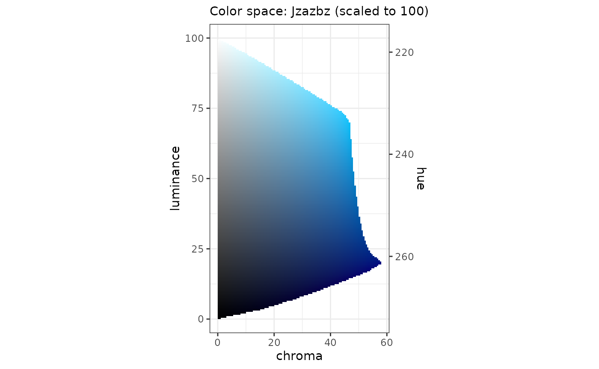
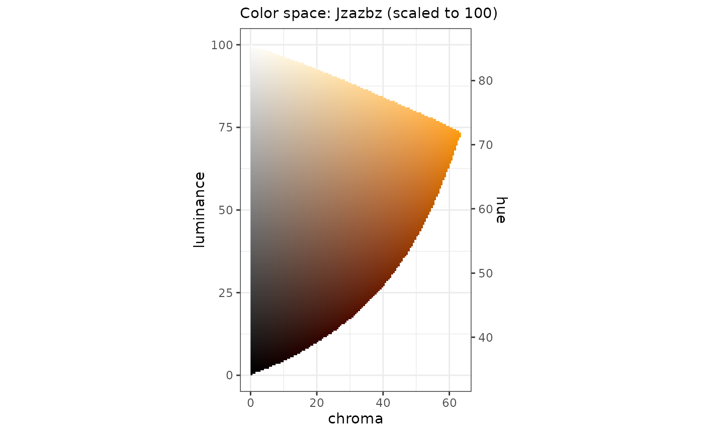
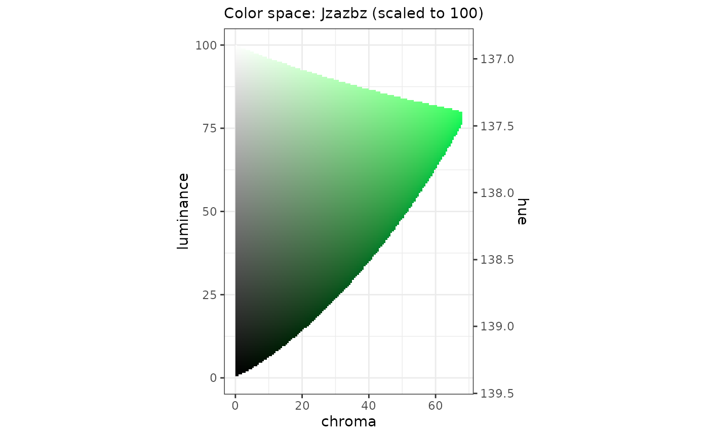
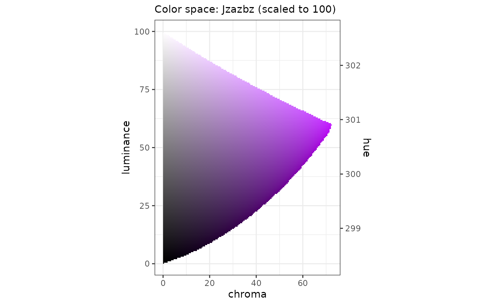
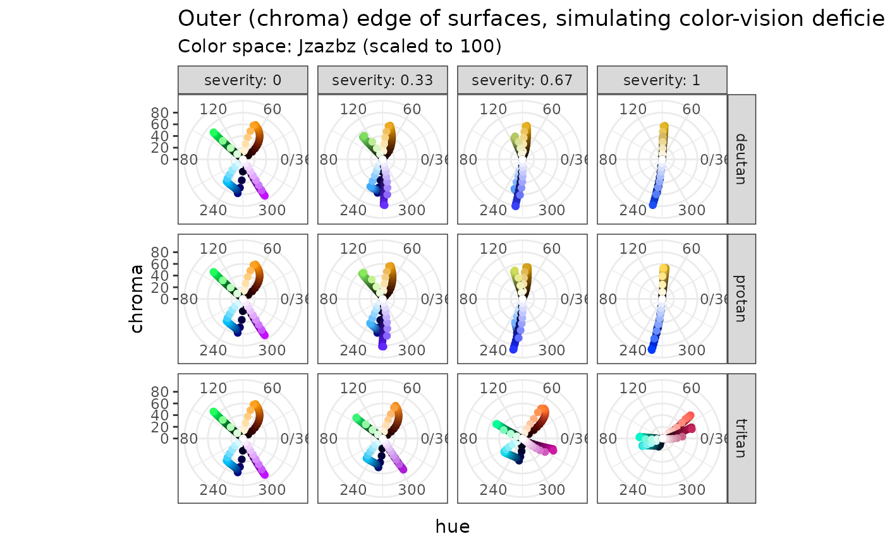

One goal of this package is to help you design sets of categorical and quantitative palettes that are consistent amongst themselves.
We propose a mechanism for this, what this package calls a surface.
At it’s simplest, a surface is the set of all colors (in a given color space) with a given hue. Let’s consider a dark-blue hue in the Jzazbz color-space:
sfc_blue <- pth_new_surface("#0000FF", transformer = pth_to_jzazbz100)It takes a few seconds for the surface to be computed; it is calculating values for maximum chroma. Here’s a plot of the result:
pth_plot_surface(sfc_blue)
This surface is a slice of the RGB gamut for the Jzazbz color-space (scaled here to 100) where the hue is fixed to the hue of #0000FF.
We can make a similar surface for cyan (#00FFFF):
sfc_cyan <- pth_new_surface("#00FFFF", transformer = pth_to_jzazbz100)
pth_plot_surface(sfc_cyan)
We notice a couple of things here:
We can create a surface that captures both these maxima:
sfc_cyan_blue <- pth_new_surface(c("#00FFFF", "#0000FF"), transformer = pth_to_jzazbz100)
pth_plot_surface(sfc_cyan_blue)
This shows another aspect of surfaces: using the given color-space, hue is a linear function of luminance. This was also the case for the single-hue surfaces.
Also note that you can define surfaces using hex-codes. This could be useful if you are designing a set of palettes for an organization, you can design surfaces using the hex-codes of existing brand-colors.
When you create a surface using hex-codes, you have to specify the color-space to be used; provide a transformer function such as pth_to_jzazbz100, without the parentheses.
There are couple other arguments to pth_new_surface():
use n_step to specify the number of steps, in luminance, to use in calculating the maximum chroma. The max-chroma is calculated once, as the surface is being created; a much quicker approximation-function is used thereafter.
use route to specify if the variation of hue - to we take the "short" (default) or "long" route around the unit circle? The "long" value may be useful if you are designing a surface to build a viridis-like or inferno-like palette.
You can see that the surface sfc_blue_cyan starts to look “purple” for values of luminance below around 40. We can make the surface more “blue” at the low end by choosing a different dark blue, in this case "#000099":
sfc_cyan_blue_clipped <- pth_new_surface(c("#00FFFF", "#000099"), transformer = pth_to_jzazbz100)
pth_plot_surface(sfc_cyan_blue_clipped)
This surface looks more “blue” top-to-bottom.
My suggestion for a set of palettes is to specify four surfaces. In this case, I’ll choose:
We’ll also look at how these surfaces behave when we simulate color-vision deficiency.
colors <- list(
blues = c("#42B4E6", "#0087CD"),
oranges = c("#E47F00", "#702407"),
greens = c("#007626", "#70E07C"),
purples = c("#3D1152", "#C530FF")
)
surfaces <- purrr::map(colors, pth_new_surface, transformer = pth_to_jzazbz100)Here are the surfaces.
I restrained the blues:
pth_plot_surface(surfaces$blues)
With the oranges, I added a redder-orange with lower luminance to add some chroma to the lower “half” of the luminance range.
pth_plot_surface(surfaces$oranges)
Whereas the blues and oranges are multi-hue the greens and purples are more single-hue:
pth_plot_surface(surfaces$greens)
pth_plot_surface(surfaces$purples)
The idea is that all the colors used in a set of categorical and quantitative palettes would be found on these surfaces. It could be useful to see how these surfaces interact with each other under simulated color-vision deficiency (CVD).
Our first step is to generate lots of colors. Here, for each of our surfaces, we are generating (in this case 21) colors at the maximum-chroma, distributed evenly along the luminance domain.
Next, we can plot these colors in polar coordinates, using pth_plot_polar():
pth_plot_polar(mat_surfaces, cvd = pth_cvd_grid_full()) +
facet_grid(
rows = vars(condition),
cols = vars(severity),
labeller = labeller(severity = label_both)
) +
ggtitle(
label = "Outer (chroma) edge of surfaces, simulating color-vision deficiency",
subtitle = glue("Color space: {pth_colorspace_name(mat_surfaces)}")
)
This is a facetted plot. Each row shows a given type of color-vision deficiency (deutan is most prevalent); each column shows a certain severity.
We are plotting points that lie on the most-chromatic part of each surface; this can give us an idea of how that surface behaves within the color space. We can use this mental-model as a guide to untangle color “collisions” in CVD. Keep in mind that the points are equally-spaced in luminance, the luminance considered in the non-CVD case.
In each case, the color space collapses from three to (almost) two dimensions. However, in each case, blues are always opposite to oranges; greens are always opposite to purples.